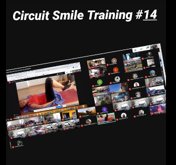

Circuit Smile
Victoria et Vincent nous proposent de les accompagner 3 fois par semaine pour 45 minutes de circuit training qui a lieu depuis leur salon lillois. Au programme : cardio, proprioception, renforcement du haut et du bas du corps, le tout en musique et avec le sourire. Tous connectés en vidéo, c'est encore plus sympa pour partager ce moment. Que vous soyez ou pas en activité, les séances ont lieu à 12h15, histoire qu'un max de monde puisse en profiter et n'hésitez pas à inviter vos enfants et ados, ils vous impressionneront certainement par leurs talents sportifs.
Pour participer, il suffit d'envoyer votre demande à Vincent qui s'occupera de vous envoyer l'invitation visio.
> Demander à participer
Victoria et Vincent ne sont pas profs de sport, ils ont juste envie de partager un moment sympa avec nous de façon totalement bénévole. Pour les remercier si nous le souhaitons, il est possible de participer à une cagnotte mise en place pour aider....
> Lien vers la cagnotte

Kids Smile
Sophie propose des activités en visio pour les enfants de 8 à 10 ans histoire de maintenir le lien social sans pour autant que les enfants soient livrés à eux-mêmes devant leurs écrans. Petits jeux de réflexion, défis, sports,... il y en a pour tous les goûts. L'activité est limité à 8 enfants pour son bon déroulé et pour faciliter les échanges entre tous. Un petit mail à Sophie pour s'inscrire et c'est parti!
> Demander à participer
Sophie est certes ancienne animatrice mais n'a pas vocation aujourd'hui à en faire son métier. Elle a juste envie de partager un moment sympa avec les plus petits de façon totalement bénévole. Pour la remercier si vous le souhaitez, il est possible de participer à une cagnotte mise en place pour aider....
> Lien vers la cagnotte